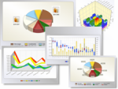

Business Intelligence for
Logístics
|
The main focus of this line
is to apply Business
Intelligence technologies such as Data Warehousing and
Data Mining, for supporting decision making processes within Logistics
and Supply Chain Management domains.
|
Biofuels Logistics and
Traceability
|
The 4
years-length Bioenergy
Program of the UNCuyo is carried
out by the Faculty of Engineering, Faculty of Applied Industrial
Sciences, Faculty of Agronomy, and INTA (National Institute of
Agricultural Technology), and sponsored by YPF (more information
|
 |
about
the program here).
The
objective is to acquire knowledge
about biofuels
by means of research projects focused on energy crops, production
processes, quality and logistics and traceability.
Logistics and Traceability
have a fundamental role given the need
|
|
of producing and managing
these new energetic resources in a sustainable and profitable way.
Research topics include: identification of actors and composition of
biofuels supply chain, design of an information system for biofuels
traceability, application of Business Intelligence for identification
of aspects with higher
impact on quality and yield of the final product, and
identification of socioeconomic impact of the introduction of biofuels
industry in new regions.
|
|
Automatic learning of
socio-economic impact models for agribusiness industries
|
The generation of new
agribusinesses usually produces the introduction of new industries in
different regions. This situation generates requirement of primary and
secondary workforce to satisfy new industries demands, which may not be
fully available in the region, because of the lack of skilled people.
In this scenario, usually happens that the region grows economically,
producing changes in land use, employment and competence. Due to the
consequences produced by this |
 |
|
|  |
grow, prediction of these
changes in demographic
and economic factors
of such regions is of paramount importance, especially considering that
usually the land used for some agribusiness cannot be used
simultaneously for another one, so there is competition for scarce
resources.
Some models have been developed in the past for predicting
|
|
| land
use, such as Lowry-type models. However they do not predict other
interesting factors, especially employment but also macro-economic and
cultural factors. In this project regression and other forecasting
machine
learning techniques are being used for learning more
complex
prediction models. |
|